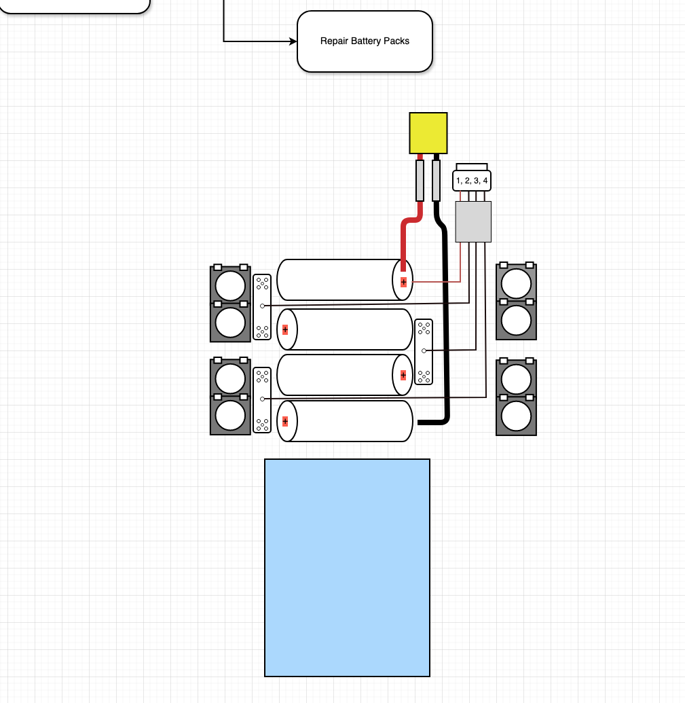

CRASH LOG
Bind
Power On Radio.
On Radio: Long press: ‘Sys’ > Tools => Express LRS
Find and Select [Bind].
Put Receiver into Bind Mode by Unplugging and Plugging 3x.
On Receiver, look for Double Blink state.
LED Indication |
Status |
|---|---|
|
Connected to a transmitter, or bootloader mode enabled |
|
Binding mode enabled. READY TO BIND |
Slow blink 500ms |
Waiting for connection from transmitter |
Triple blink |
Connected to transmitter but mismatched model-match configuration |
Medium speed |
Radio chip not detected |
|
WiFi mode enabled |
 Solid on
Solid on Double blink
Double blink Fast blinking
Fast blinkingNote
If Binding is not initiated within one minute, receiver will enter WIFI mode [Fast blinking].


“C” in the upper right hand corner denotes a successful BIND.
Audio: “Telemetry Recovered”

RSSI
RSSI (Pawel Spychalski FPV University)
R: Received
S: Signal
S: Strength
I: Indication
SNR
Link Quality (LQ)
… and decoded. It is a ratio.
RSSI Find Model Trick - Painless 360
Technique:
- With the model still powered on (battery connected), walk in the direction you last saw it.
- Access the telemetry or sensor menu on your radio to check RSSI values.
- As you walk closer to the model, the RSSI number will increase.
- Every so often, stop and sweep your transmitter in a wide arc (180°) while watching the RSSI
reading. This helps identify the direction of strongest signal—your transmitter’s antenna is most sensitive on the sides, not the tip.
- Continue walking in the direction where RSSI is strongest and keep repeating the process.
- As you approach the model, the RSSI value will increase much more rapidly—when nearing 85 or higher, you are within a few meters.
Final Search: When you see very high RSSI, stop and sweep your transmitter in a full circle to fine-tune the exact direction.
Battery Packs
21700
